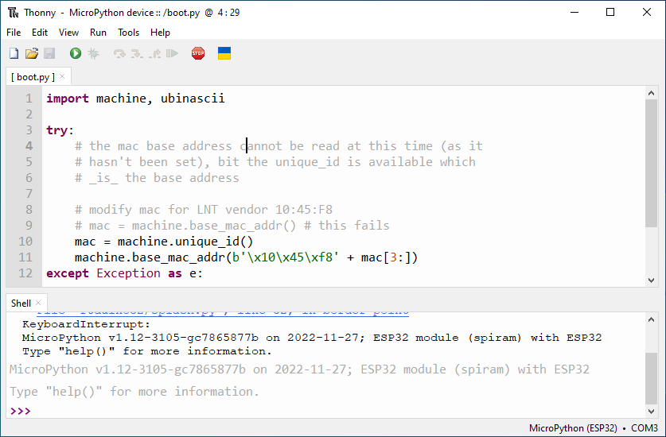

Thonny is probably the most common IDE used for MicroPython development.
Thonny doesn't specifically target MicroPython and it can be used with a local Python installation as well. To connect to the ftDuino32 go to Tools > Options and select the Interpreter tab. Select the MicroPython (ESP32) interpreter and click OK.
Further information on MicroPython with Thonny can e.g. be found here.
